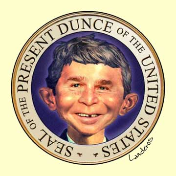

|

The Brains Thing
Three years of watching Bush makes the point: Intelligence matters more than “character.”
- - - - - - - - - -
by Matthew Yglesias
 emember the 2000 election? With the country enjoying a seemingly endless spell of peace and prosperity, and no apparent daunting challenges facing the next chief executive, the media were finally granted the chance to construct a narrative entirely around personalities. Al Gore, based on a handful of small exaggerations and his association with the occasionally sordid behavior of Bill Clinton, was said to have a character problem. George W. Bush, meanwhile, was haunted by a lack of experience and intelligence. emember the 2000 election? With the country enjoying a seemingly endless spell of peace and prosperity, and no apparent daunting challenges facing the next chief executive, the media were finally granted the chance to construct a narrative entirely around personalities. Al Gore, based on a handful of small exaggerations and his association with the occasionally sordid behavior of Bill Clinton, was said to have a character problem. George W. Bush, meanwhile, was haunted by a lack of experience and intelligence.
This left liberals flustered. Most of Gore’s “lies” were, in fact, nothing of the sort; he was, upon examination, not the same person as Clinton; and finally, his Vietnam experience -- he enlisted in the Army upon graduation from Harvard -- contrasted favorably with his opponent’s. But liberals never figured out how to convert these facts into a character argument on Gore’s behalf. Conservatives, on the other hand, had a ready answer to the charges leveled against their standard-bearer: Intelligence didn’t matter. A president, after all, is assisted by a cabinet, White House aides, and a staff that numbers in the thousands. Surely those people could help him out when he needed to know the name of the president of Pakistan or run some numbers on a tax bill. Even George Will, who in August of 1999 fretted about Bush’s “lack of gravitas -- a carelessness, perhaps even a recklessness perhaps born of things having gone a bit too easily so far,” wrote the following January that he was prepared to have his “doubts about Bush’s intellectual weight and steadiness” be alleviated by an appropriate vice-presidential selection. Dick Cheney, he suggested, was just the man for the job, and later that year Will became a happy camper.
Liberals unanimously believed that Bush was not up to the intellectual challenges of the job. But fearful of re-enforcing a stereotype of left-wing elitism, they time and again shied away from pressing the argument. With the point thus conceded, Gore fought things out on the enemy terrain of character. To the Bush campaign’s promise to “restore honor and dignity to the White House,” Gore had no real reply -- except to put as much distance between himself and the incumbent as possible. Thus the country was treated to the strange sight of a vice president essentially disavowing his popular, rhetorically brilliant, and largely successful predecessor. Joe Lieberman was put on the ticket, and the campaign reached its high point when Gore made things really clear by delivering an ostentatious kiss to Tipper on national television at the convention. This, the campaign said, is a candidate who truly loves his wife, not at all like that other guy. But ultimately, character -- at least as defined by the Republicans and, more important, the media, who happen to be the ones who do the defining -- isn’t a point on which a Democrat can win.
With Bush in office, liberals dropped the intelligence critique altogether. In a March 13, 2001, “Memo to George W. Bush’s political opponents,” E.J. Dionne Jr. called for “a moratorium on calling the president of the United States stupid.” Doing so underestimated his potential for political success and, worse, was counterproductive, bolstering Bush’s “regular guy” appeal and distracting attention from the baleful distributive consequences of his tax policy. And there things stood until September 11, 2001.
If ever there was a moment when the country might have been called to question whether it was well-served in a time of crisis by a leader with scant knowledge of the relevant issues, it was then. Instead, things merely got worse. Intelligence was off the table entirely, while character became the cult of moral clarity, a transformation well expressed by former Bush speechwriter David Frum in his memoir. After the attacks, he wrote, he realized that “Bush was not a lightweight.” Instead he was “a very unfamiliar type of heavyweight. Words often failed him, his memory sometimes betrayed him, but his vision was large and clear. And when he perceived new possibilities, he had the courage to act on them -- a much less common virtue in politics than one might suppose.” With the nation reeling from attack, the thirst for a strong leader was palpable, and so the press obliged by constructing Bush into one. Lacking the conventional attributes of a skilled -- or even competent -- chief executive, he became, as Frum put it, an “unfamiliar type of heavyweight.”
And now, more than a few of Bush’s usual opponents agreed. Richard Cohen, part of a small army of liberal commentators who would eventually find themselves following Bush into Baghdad, wrote in his December 18, 2001, column that “I applaud whenever George Bush issues one of his dead-or-alive pronouncements” and denounced those, “invariably on the political left,” who “upbraid him for his supposed childishness.” Unlike his critics, Bush had a Reagan-like “moral clarity” about the struggle; and that, rather than any childishness, was the important point.
Such was the mood of late 2001. On October 20, The New York Times reported that “many Democrats who once dismissed Mr. Bush as too naive and too dependent on advisers to steer the United States through an international crisis are now praising his and his advisers’ performance. Some are even privately expressing satisfaction that Mr. Gore, who tried to make his foreign affairs experience an issue in the campaign, did not win.” Gore “may know too much,” said one anonymous former Senate Democrat quoted by the Times.
Three-plus years later we know better, or at least we should. Intelligence matters. The job of the president of the United States is not to love his wife; it’s to manage a wide range of complicated issues. That requires character, yes, but not the kind of character measured by private virtues like fidelity to spouse and frequency of quotations from Scripture. Yet it also requires intelligence. It requires intellectual curiosity, an ability to familiarize oneself with a broad range of views, the capacity -- yes -- to grasp nuances, to foresee the potential ramifications of one’s decisions, and, simply, to think things through. Four years ago, these were not considered necessary pieces of presidential equipment. Today, they have to be.
The most egregious consequences of Bush’s lack of intellectual curiosity have come in regard to foreign policy. But domestic policy making has suffered, too. Indeed, Bush’s disengagement has arguably been more severe in this arena. Abroad, one can at least say that Bush made some choices he believed at the time to be the right ones. But on the home front, the president’s lack of commitment to any idea (beyond a blind faith in the power of tax cuts to cure all) has turned the policy process into a joke and consistently marginalized serious analysts in favor of the entirely political counsel proffered by Karl Rove and other hacks. “It’s the reign of the Mayberry Machiavellis,” as former faith-based-initiatives coordinator John DiIulio famously put it.
The result is a record that has literally no defenders outside the ranks of professional GOP spinners and the corporate lobbyists who’ve profited enormously from Bush’s malgovernance. I speak regularly with independent conservative analysts and intellectuals in Washington’s many think tanks. Among them, the closest one gets to a defense on the merits is to say that the nonsensical combination of tax cuts and new entitlement spending, of free-trade deals and shrimp tariffs, is trivial compared with the importance of the war on terrorism. Sometimes I’m told that this is just what needs to be done to win the election. The second term, optimistic conservatives say, will be better. Most often I’m just told that the Democrats will be even worse.
But no one tries to assert that Bush is a deeply engaged decision-maker. In fact, the known record suggests that he takes the advice of the last person he listened to, whether that person was making sense or not, and his advisers understand it as their responsibility to jockey to be that person. The mechanics of this farce were well-expressed in an underreported memo written by Kent Smetters for former Treasury Secretary Paul O’Neill. O’Neill gave the memo to Ron Suskind, who made it available on his Web site. The date was October 25, 2001 -- just five days before the president was scheduled to meet with the chairs of the commission he had appointed to devise a plan to partially privatize Social Security. The memo recounted the president’s campaign promise to create a system of voluntary private accounts, noting that such questions as “what the president meant during his campaign by the word ‘voluntary,’” or whether the president wants “to force the Commission to come up with one plan or allow multiple plans,” had been left unanswered.
The key point of the memo, however, was that before the big meeting, Bush’s team needed to know whether the president was “willing to live with benefit cuts (i.e., ‘pain’) like that called for by price indexing benefits.” The basic dilemma facing any would-be privatizer is that under the present system, a worker’s payroll taxes pay not for his retirement but for that of current retirees. Under a privatized system, your taxes would be diverted into an account that would be invested and from which you would draw your pension. Any attempt to switch between the systems, then, finds a current worker’s tax dollars being promised both to the worker and to today’s retirees. The only way to finance the transaction is with benefit cuts, tax increases, or some combination of the two. If the president is not willing to live with “pain,” he can’t privatize Social Security.
Larry Lindsey, however, believed he had devised a “free-lunch” plan where the transition could be financed by debt that could be repaid down the road through the high returns that would supposedly accrue to the private accounts. No one else in the government believed that the math behind this was sound, but the president -- not understanding the relevant policy issues -- seemed to. “Clearly,” wrote Smetters, “the person who actually gives the president the verbal background briefing will play an important role in affecting the president’s decision-making process.” The important thing, he advised O’Neill, was to get all discussion of the Lindsey plan removed from the president’s briefing, forcing him to choose between realistic options.
Ultimately, Bush decided not to decide, and the White House dropped the whole thing, thus saving the country from a heaping pile of debt. On other issues, though, the policy people wouldn’t be so lucky. Hence the series of narrowly targeted import restrictions aimed at winning votes in key swing states and opposed by the administration’s economics shop. Hence the Medicare bill that infuriated health-conscious liberals and spending-conscious conservatives alike while winning plaudits from health-care lobbyists and GOP fund-raisers. Hence a decision on the stem-cell issue grounded neither in science nor religion but rather in electoral calculations, and a decision that Bush, supposedly boning up on science down in Crawford in the weeks before 9-11, was obviously ill-equipped to make [see Chris Mooney, “Cell Block,” page 29]. Serious policy advocates simply have no chance of winning over a man who can’t be bothered to listen closely to what they’re saying. Instead, hacks and flim-flam men rule the roost.
Bush’s most high-profile foreign-policy failure -- the disastrously bad planning for the occupation of Iraq -- provides a direct analogue to the domestic scene. The government did, in fact, do a lot of good work on the subject under the auspices of the State Department’s Future of Iraq Group. Rival analysis from Undersecretary of Defense Douglas Feith’s office, however, suggested that the task would be much easier. A president prepared to read and understand complicated policy briefs would have seen that the Future of Iraq Group had it right. But the country didn’t have a president like that. So yet again the path of expediency was chosen, with well-known results.
More typically, though, the president’s intellectual infirmity affects national-security policy by creating paralysis, as his famously divided foreign-policy team is unable to agree on a common approach and the president is incapable of choosing one side or the other.
As a result, one of Bush’s biggest foreign-policy disasters relates less to something he’s done than to what he hasn’t done: devise a coherent policy toward North Korea. The debacle began in March of 2001, with South Korean President Kim Dae-Jung scheduled to visit Washington. On the eve of the trip, Secretary of State Colin Powell told reporters that the new administration would pick up where the Clinton administration had left off: supporting Kim’s “sunshine policy” toward the North and pushing for full implementation of the 1994 Agreed Framework under which North Korea abided by a stipulation not to build nuclear weapons in exchange for U.S. financial and energy assistance. The White House immediately contradicted Powell, giving us the first sign that something was amiss with the supposedly “grown-up” new national-security team and infuriating Kim. Administration hawks -- led by Cheney and Donald Rumsfeld -- didn’t replace the Powell-Kim-Clinton engagement policy with any real alternative; instead, they sought simply to talk tough and “isolate” North Korea, already the most isolated country on earth. Thus North Korea found itself featured in the 2002 State of the Union address as a charter member of the “axis of evil” (although this, the country later learned, was not a deliberate policy shift but simply a reflection of a desire to throw a non-Muslim country on to the list to allay fears that America was waging war on Islam). The hawks hoped that the regime would fall apart before it built nukes. Things didn’t work out that way.
North Korean President Kim Jong-Il concluded that because Bush clearly meant to invade Iraq, had broken off negotiations with his regime, and was now lumping the two together as “evil,” he might soon find himself targeted. The result -- a result that even a moderately engaged chief executive would have foreseen -- was a North Korean rush to acquire nuclear weapons that could deter U.S. invasion before it was too late. By October 2002, the State Department sent officials to Pyongyang to confront the regime with evidence that it had been acquiring centrifuges needed to make weapons-grade uranium. Instead of offering the expected denials, North Korean officials conceded that, yes, they had done just that. After some trans-Pacific name-calling, Pyongyang let the other shoe drop: Not only was it processing uranium (which could take years to be successful), it was also kicking out the weapons inspectors who, under the Agreed Framework, were safeguarding North Korean plutonium rods that could be turned into nuclear fuel within months.
The time had come for the president to do something about the situation. So he did exactly what we were assured during the 2000 campaign he would do: He asked his advisers. The problem was, they didn’t agree. Some were hawks and others more dovish, so Bush couldn’t make up his mind. As Fred Kaplan wrote in The Washington Monthly, Bush “neither threatened war not pursued diplomacy.” Eighteen months later, with U.S. forces pinned down in Iraq and North Korea allegedly possessing several nuclear weapons, military options had to be taken off the table, and even administration hawks agreed that they had to pursue talks. Unfortunately, when you refuse to negotiate until you have no sticks left, it’s hard to get a good deal, and the United States now may be unable to secure a non-nuclear North Korea. And if we do get what we want, we will surely need to give up far more than we would have had we just negotiated in the first place.
Worse, as the Prospect goes to press, history is repeating itself in Iran, pace Marx, as tragedy all over again. Tehran is cheating on its international commitments, and the United States needs to do something about it. Some in the administration want to pursue engagement; others want a push for regime change. As before, Bush can’t decide what to do, and as time goes on, our options will only get worse. No American has yet paid the price for the North Korean fiasco or the emerging one in Iran, but down the road our strategic position is deteriorating with remarkable speed while we have not yet -- and may never -- make up for the opportunity squandered at the beginning of the Iraq War.
Reviewing Clinton’s My Life in the June 24, 2004, Los Angeles Times, neoconservative Max Boot happily concluded that “conservatives like character, liberals like cleverness.” He’s right. But to state what should be obvious, the president is not your father, your husband, your drinking buddy, or your minister. These are important roles, but they are not the president’s. He has a job to do, and it’s a difficult one, involving a wide array of complicated issues. His responsibility to manage these issues is a public one, and the capacity to do so in a competent and moral manner is fundamentally unrelated to the private virtues of family, friendship, fidelity, charity, compassion, and all the rest.
For the president to lead an exemplary personal life is surely superior to the alternative. But within obvious limits -- no one would want an alcoholic president, for example -- it doesn’t really matter. Clinton’s indiscretions caused his family pain and produced awkward moments for the parents of some young children. But Bush’s bungling has gotten people killed in Iraq, saddled the nation with enormous debts, and created long-term security problems with which the country has not yet begun to grapple.
That the country should be secured against terrorist attacks, that deadly weapons should be kept out of the hands of our enemies, or that it would be good for a wide slice of the world to enjoy the blessings of freedom and democracy are hardly controversial propositions. But these things are easier said than done. Even a person of goodwill is by no means guaranteed to succeed. Yet succeed we must. And if we are to do so, the question of intelligence must be put back on the table. The issue is not “cleverness” -- some kind of parlor trick or showy mastery of trivia -- but a basic ability to make sense of a complicated, fast-changing world and decide how to confront it. Any leader will depend on the work of his subordinates, but counting on advisers to do the president’s heavy lifting for him simply will not do. Unless the chief executive can understand what people are telling him and follow the complicated arguments they may need to make, he will find himself paralyzed at every point of disagreement, or he will adopt the views of the slickest salesman rather than the one who’s gotten things right.
The price to be paid for such errors is a high one -- it is, quite literally, a matter of life and death. Already we’ve paid too much, and the problems confronting the country are growing harder with time. Unless the media, the electorate, and the political culture at large can shift their focus off of trivia and on to things that actually matter, it’s a price we may pay again and again.
Reprinted from The American Prospect

|